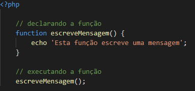
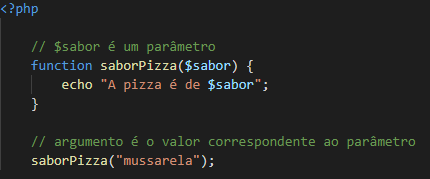
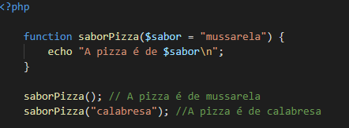
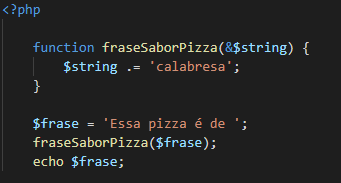
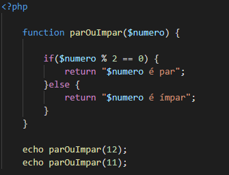

Função é um bloco de código que deve ter uma finalidade. É importante que o bloco contenha apenas uma, para seguir as boas práticas. É definida com um nome que não pode ser repetido no código, e não deverá ter o mesmo nome de uma função nativa. O intuito de uma função é a reutilização do código, evitando replicação em vários lugares do sistema. Assim, caso exista a necessidade de adaptação, apenas um lugar será modificado.
Parâmetros são uma lista de expressões delimitadas por vírgula, que passamos para uma função. Argumento são os valores atribuídos a esses parâmetros no qual iremos trabalhar. Exemplo:
Podemos também utilizar um argumento padrão:
Ao adicionar o & na frente do parâmetro, indicamos uma passagem por referência. Dessa forma, o valor será modificado diretamente no endereço de memória.
A instrução return nos permite retornar valores de qualquer tipo e indica o fim da função, dessa forma o programa continua a execução na próxima linha na qual a função foi chamada. Exemplo:
